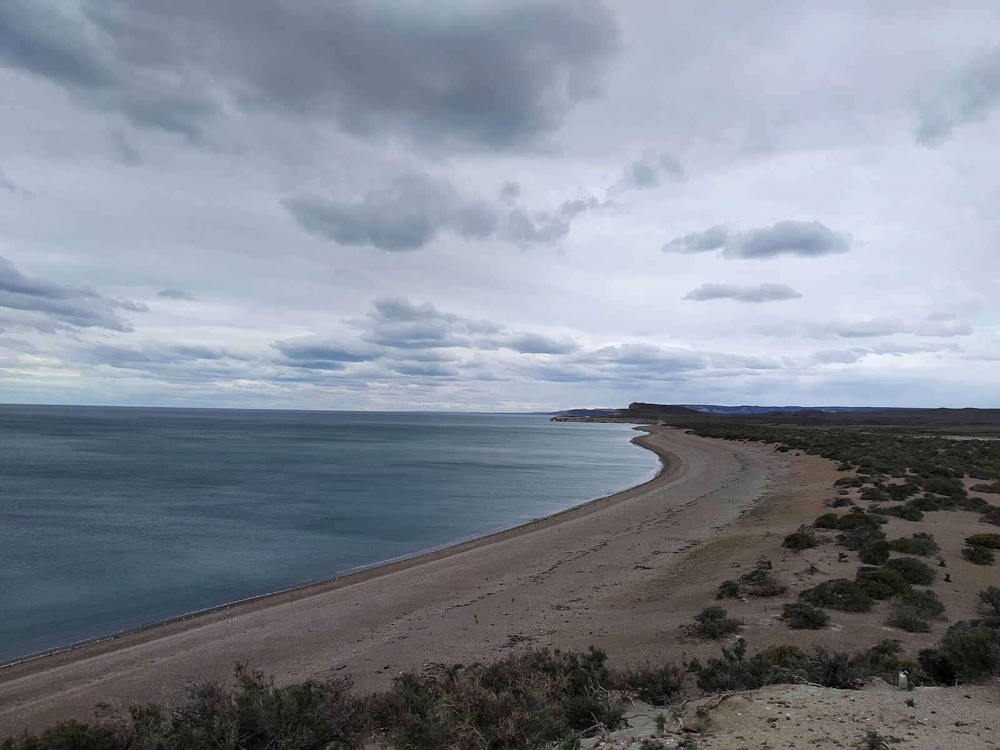

Sumá tu comercio
Si tenés un alojamiento, restaurante, excursión o producto regional en Santa Cruz, aparecé donde los viajeros planifican.
Santa Cruz Profunda es una guía independiente hecha desde Puerto San Julián. El listado básico del directorio se arma con datos públicos y es gratuito; los planes pagos suman visibilidad. Todavía no hay comercios destacados: si te sumás ahora, entrás entre los primeros. Los precios están en pesos argentinos; condiciones de facturación a convenir.
Básico
$15.000 por mes
- ✓ Ficha en el directorio con datos de contacto
- ✓ Enlace a WhatsApp, web y redes
- ✓ Ubicación y rubro
Destacado
$35.000 por mes · mínimo 3 meses
- ✓ Todo lo del Básico
- ✓ Aparición destacada en el directorio y en la página del destino
- ✓ Mención en la newsletter
- ✓ Fotos propias en la ficha
Socio fundador
$240.000 por año · 10 cupos
- ✓ Todo lo del Destacado
- ✓ Precio congelado durante el primer año
- ✓ Distintivo de Socio fundador
- ✓ Prioridad en notas y rutas
No publicamos testimonios ni estadísticas de tráfico hasta tener datos reales.